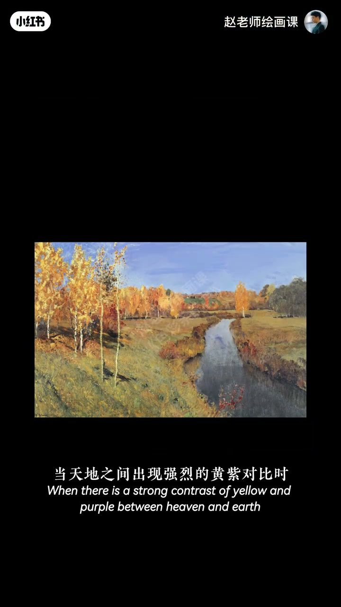
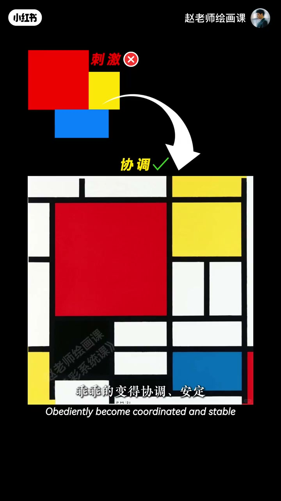
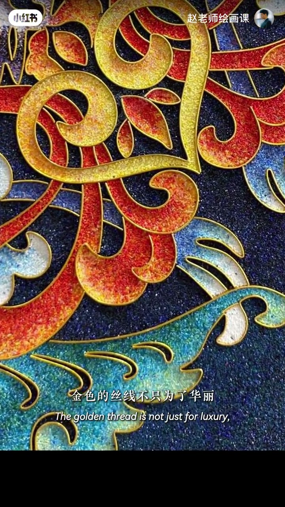

内容要点
赵老师用橙底蓝字加白描边、红绿加黑边的小实验，点出经典原理「间隔调和」：强对比色中间插入中性间隔，眼睛有缓冲就协调。莫奈草地里白云不是随便画的——去掉后蓝绿立刻不透气；色块拉开露白再加黑边，走向蒙德里安式秩序；摄影里黑白灰、穿搭白衣领灰围巾、掐丝珐琅金线，都是同一底层逻辑。下期预告五大对比关系。
知识结构
描边让冲突色舒服＝间隔调和。
白云缓冲蓝绿，如同字母白边。
露白+黑边→蒙德里安；摄影黑白灰调和。
穿搭与掐丝金线；跨领域底层逻辑。
色彩变「高级」常常不是再堆饱和，而是用黑／白／灰／金把强对比隔开，给眼睛一条缓冲带。
00:00-00:24描边小实验：冲突变协调
橙底蓝字母特别醒目，加白描边瞬间舒服；红底绿字加黑边突然不刺眼。为什么一个描边就能让冲突色协调？答案是间隔调和。00:08「COLOR」字效。
00:24-01:05莫奈的云：大师的缓冲带
看莫奈普瓦西附近草地：蓝天绿树鲜艳，真正让画面透气的是白云。演示去掉它们，蓝与绿立刻不透气；天地强黄对比时，白云缓冲更明显。云就好比字母白描边——把两块强对比隔开，眼睛有缓冲带就舒服。别再觉得大师画云只凭感觉。00:40。

01:05-01:56色块→蒙德里安→摄影黑白灰
红黄蓝高饱和挤一起难搭；分开一点露出白底，再配黑描边，从刺激变成协调安定，甚至有理性秩序——这就是蒙德里安，把间隔调和带进视觉设计。
当代摄影师 Alex Webb 善用色彩，鲜艳配色里常有黑白灰在调和。01:25。

01:56-02:35穿搭与掐丝珐琅：同一逻辑
白衣领或灰围巾能让鲜艳上衣与肤色更协调；金色亦可——中国掐丝珐琅的金线不只为华丽，更让蓝绿红对比舒服。从油画到设计、摄影到穿搭到传统工艺，色彩调和是关系底层逻辑，不是某一领域的风格技巧。02:10。

完整转录（61段）
以下文本由 Whisper medium 模型自动转录，可能存在少量识别误差，已尽可能修正。
橙色背景加上蓝色字母
特别醒目
加个白色描边
瞬间就舒服多了
红背景 绿字母
加个黑边
突然就不思雅了
为什么一个描边就能让冲突的色彩变得这么协调
答案很简单
因为一个经典的色彩原理
间隔调和
来看诺奈的普瓦西附近的草地
蓝天和绿树鲜艳好看
但真正让画面舒服的是白云
我们来去掉它们
蓝和绿是不是瞬间就没有那么透气了
当天地之间出现强烈的黄色对比时
白云的视觉缓冲作用就更加明显了
而这些云就好比刚才字母的白色描边
它把两块对比较强的颜色间隔开来
让眼睛有了缓冲曲
我们就会觉得舒服协调
所以你还觉得大师的云
仅仅是跟著感觉在画吗
我们来继续做个实验
把红黄蓝的高饱和色块放在一起
很难搭配是吧
那分开一点距离
露出白色的底色
瞬间舒服了
再配上黑色描边
最终它们由视觉刺激
乖乖的变得协调安定
甚至有种理性的秩序感
这个人就是蒙德里安
他把间隔调和原理从绘画
第一次带进了视觉设计
当代摄影家亚里克斯·韦伯
特别善于利用色彩
很多画面的情绪
大家仔细看
发现了没有
每个鲜艳的配色
都运用了黑白灰做了调和
在专桌中
白色衣领或者灰色围巾
都可以让你鲜艳的上衣和肤色更协调
当然除了黑白灰
金色其实也可以达到调和的效果
比如来自我们中国的掐丝发廊材
金色的丝线不只为了华丽
而是让蓝绿红的对比变得更舒服
所以你看从油画到设计
从摄影到穿搭
再到我们中国的传统工艺
色彩的调和
从来不是一个领域的风格或者技巧
而是色彩关系的底层逻辑
下一期我们利用色彩的五大对比关系
教你构建真正的充满吸引力的画面
拜拜